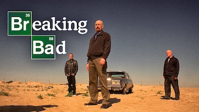
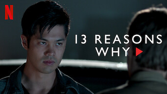
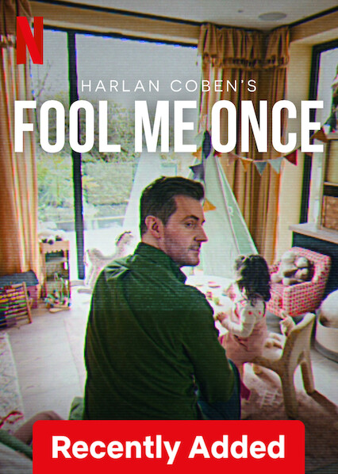
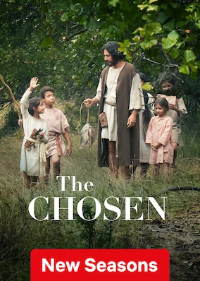
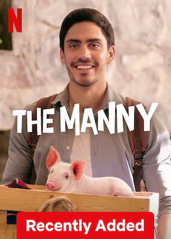
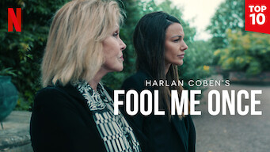

Home
TV Shows
Movies
News & Popular
My List
Browse By Languages
Jorge Luis Malaquias
Switch Profile
Account
Help Center
Sign Out of Netflix
Home
My List
Thrillers
Kids & Family
Internacional Movies & TV
Popular na Netflix
Ver tudo


Tendências agora
Ver tudo
Brasil: top 10 em séries hoje
1
2
3

4
5

6

7
9
Porque você assistiu
Ver tudo

Novos lançamentos
Ver tudo
% Gostaram
Temporadas
Assistir
16
Temporadas
Assistir
Temporadas
TOP
10
#5 em séries hoje
Elenco:
mais
Gêneros:
mais
Cenas e momentos: